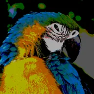

Posterisasi

Memecah tiap saluran warna menjadi sejumlah Langkah datar sehingga gradien halus berubah menjadi pita; Offset menggeser posisi tepi pita.
Pengaturan
| Pengaturan | Jenis | Rentang | Default |
|---|---|---|---|
| Langkah | Angka | 2 hingga 255 | 10 |
| Offset | Angka | -1 hingga 1 | 0 |